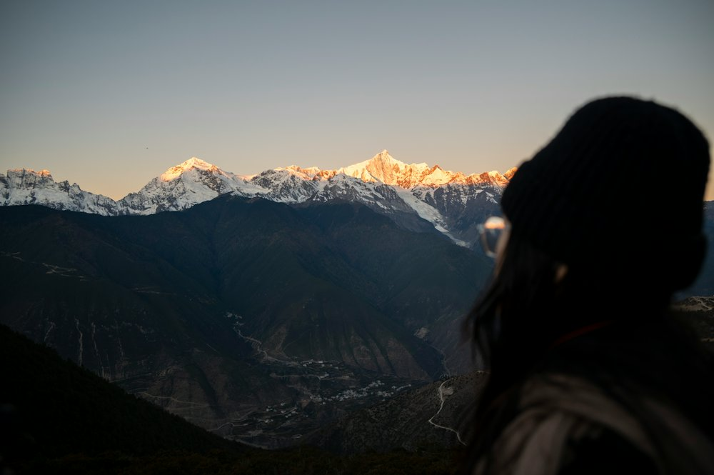

现象历年规律西南
梅里雪山日照金山
Meili Golden Summit · 云南 · 迪庆
最佳时间
10 月 – 次年 1 月能见度最高；日出时分
冬季晴日概率高；雨季 6–8 月常云雾遮山。
卡瓦格博的加冕时刻：日出第一缕光把主峰染成金色，从山尖一路烧到山腰。
不能错过
- 飞来寺观景台与雾浓顶是两大机位
- 雨崩村内看神瀑与雪山日照更静谧
当地美食
牦牛肉火锅飞来寺晚餐标配，看完金山来一锅
酥油茶+青稞饼雾浓顶晨等金山的保温组合
松茸炖土鸡雨崩村菌季招牌
葡萄酒澜沧江畔茨中教堂酿酒传统
参考：Meili Snow Mountains — Wikipedia ↗ · Tibetan cuisine — Wikipedia ↗ · 【梅里雪山】美食与住宿全攻略:德钦藏餐牦牛肉与飞来寺观景房 云南旅游攻略 游记攻略 _西安康辉旅行社官网 ↗ · 🌈飞来寺地道美食|生态牦牛王💖 - 大众点评吃喝玩乐精选 ↗ · 错过等一年!梅里雪山日照金山全攻略,附藏区美食地图 ↗ · 梅里雪山住哪里最好?飞来寺、雾浓顶、雨崩三大片区住宿攻略 - 百度文库 ↗ · 云南梅里雪山旅游攻略,2天1晚千元内打卡日照金山,景点美食全攻略 ↗ · 国内度假怎么样 梅里雪山攻略 一篇让你从向往到心动的完全指南_什么值得买 ↗
旅人提醒
- 能否见到全凭天气，住两晚提高概率
- 冬季清晨零下，机位等日出要全副武装
月度热力与气温
7°
1
8°
2
11°
3
15°
4
19°
5
23°
6
23°
7
22°
8
21°
9
17°
10
12°
11
8°
12
适宜度（柱高，5=最佳）依据活动窗口与气候整理；气温为月均高温近似值（°C），仅供规划参考，出行前请查当地预报。
编辑核实笔记 · 整理自迪庆州公开资料，非亲历；天气不可控。
预订 / 官网
官方页面：查看官网 / 官方信息 ↗ · 票价与预约以官网为准
联盟链接含占位 tracking id（Booking/Klook/Trip.com），上线替换为真实 ID 即生效；均带 utm 参数与点击统计。